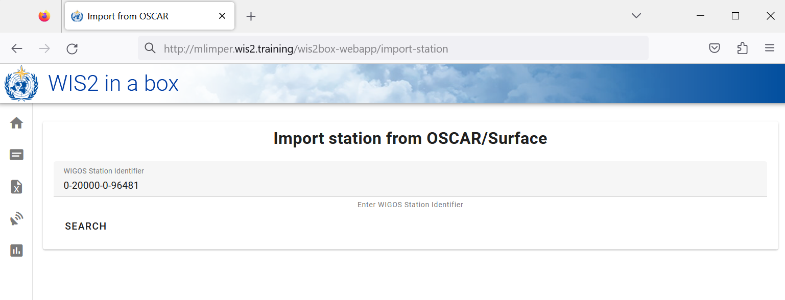

Configurando metadados de estação
Resultados de aprendizado
Ao final desta sessão prática, você será capaz de:
- criar um token de autorização para o endpoint
collections/stations - adicionar metadados de estação ao wis2box
- atualizar/excluir metadados de estação usando o wis2box-webapp
Introdução
Para compartilhar dados internacionalmente entre os Membros da OMM, é importante ter um entendimento comum das estações que estão produzindo os dados. O Sistema Global Integrado de Observação da OMM (WIGOS) fornece uma estrutura para a integração de sistemas de observação e sistemas de gestão de dados. O Identificador de Estação WIGOS (WSI) é usado como a referência única da estação que produziu um conjunto específico de dados de observação.
O wis2box possui uma coleção de metadados de estação que é usada para descrever as estações que estão produzindo os dados de observação e deve ser recuperada de OSCAR/Surface. Os metadados de estação no wis2box são usados pelas ferramentas de transformação BUFR para verificar se os dados de entrada contêm um Identificador de Estação WIGOS (WSI) válido e para fornecer um mapeamento entre o WSI e os metadados da estação.
Criar um token de autorização para collections/stations
Para editar estações através do wis2box-webapp, você primeiro precisará criar um token de autorização.
Faça login na sua VM de estudante e certifique-se de estar no diretório wis2box-1.0.0rc1:
cd ~/wis2box-1.0.0rc1
Em seguida, faça login no contêiner wis2box-management com o seguinte comando:
python3 wis2box-ctl.py login
Dentro do contêiner wis2box-management, você pode criar um token de autorização para um endpoint específico usando o comando: wis2box auth add-token --path <meu-endpoint>.
Por exemplo, para usar um token gerado automaticamente aleatório para o endpoint collections/stations:
wis2box auth add-token --path collections/stations
A saída será assim:
Continue com o token: 7ca20386a131f0de384e6ffa288eb1ae385364b3694e47e3b451598c82e899d1 [y/N]? y
Token criado com sucesso
Ou, se você quiser definir seu próprio token para o endpoint collections/stations, você pode usar o seguinte exemplo:
wis2box auth add-token --path collections/stations DataIsMagic
Saída:
Continue com o token: DataIsMagic [y/N]? y
Token criado com sucesso
Por favor, crie um token de autorização para o endpoint collections/stations usando as instruções acima.
Adicionar metadados de estação usando o wis2box-webapp
O wis2box-webapp fornece uma interface gráfica para editar metadados de estação.
Abra o wis2box-webapp no seu navegador navegando até http://<seu-host>/wis2box-webapp:

E selecione estações:

Quando você clicar em 'adicionar nova estação', será solicitado que você forneça o identificador de estação WIGOS para a estação que deseja adicionar:

Adicionar metadados de estação para 3 ou mais estações
Por favor, adicione três ou mais estações à coleção de metadados de estação do seu wis2box.
Se possível, use estações do seu país, especialmente se você trouxe seus próprios dados.
Se o seu país não tiver nenhuma estação em OSCAR/Surface, você pode usar as seguintes estações para o propósito deste exercício:
- 0-20000-0-91334
- 0-20000-0-96323 (note a ausência de elevação da estação em OSCAR)
- 0-20000-0-96749 (note a ausência de elevação da estação em OSCAR)
Quando você clicar em buscar, os dados da estação serão recuperados de OSCAR/Surface, por favor, note que isso pode levar alguns segundos.
Revise os dados retornados por OSCAR/Surface e adicione dados ausentes quando necessário. Selecione um tópico para a estação e forneça seu token de autorização para o endpoint collections/stations e clique em 'salvar':


Volte à lista de estações e você verá a estação que adicionou:

Repita esse processo até ter pelo menos 3 estações configuradas.
Derivando informações de elevação ausentes
Se a elevação da sua estação estiver ausente, há serviços online para ajudar a procurar a elevação usando dados de elevação abertos. Um exemplo é a API de Dados Topográficos Abertos.
Por exemplo, para obter a elevação na latitude -6.15558 e longitude 106.84204, você pode copiar e colar a seguinte URL em uma nova aba do navegador:
https://api.opentopodata.org/v1/aster30m?locations=-6.15558,106.84204
Saída:
{
"results": [
{
"dataset": "aster30m",
"elevation": 7.0,
"location": {
"lat": -6.15558,
"lng": 106.84204
}
}
],
"status": "OK"
}
Revisar seus metadados de estação
Os metadados da estação são armazenados no backend do wis2box e disponibilizados via wis2box-api.
Se você abrir um navegador e navegar até http://<seu-host>/oapi/collections/stations/items, você verá os metadados da estação que adicionou:

Revisar seus metadados de estação
Verifique se as estações que você adicionou estão associadas ao seu conjunto de dados visitando http://<seu-host>/oapi/collections/stations/items no seu navegador.
Você também tem a opção de visualizar/atualizar/excluir a estação no wis2box-webapp. Note que você precisa fornecer seu token de autorização para o endpoint collections/stations para atualizar/excluir a estação.
Atualizar/excluir metadados de estação
Tente ver se você consegue atualizar/excluir os metadados de estação para uma das estações que você adicionou usando o wis2box-webapp.
Carregamento em massa de metadados de estação
Note que o wis2box também tem a capacidade de realizar o carregamento "em massa" de metadados de estação a partir de um arquivo CSV usando a linha de comando no contêiner wis2box-management.
python3 wis2box-ctl.py login
wis2box metadata station publish-collection -p /data/wis2box/metadata/station/station_list.csv -th origin/a/wis2/centre-id/weather/surface-based-observations/synop
Isso permite que você carregue um grande número de estações de uma vez e as associe com um tópico específico.
Você pode criar o arquivo CSV usando o Excel ou um editor de texto e depois fazer o upload para o wis2box-host-datadir para disponibilizá-lo ao contêiner wis2box-management no diretório /data/wis2box/.
Após fazer um carregamento em massa de estações, é recomendável revisar as estações no wis2box-webapp para garantir que os dados foram carregados corretamente.
Consulte a documentação oficial do wis2box para mais informações sobre como usar esse recurso.
Conclusão
Parabéns!
Nesta sessão prática, você aprendeu a:
- criar um token de autorização para o endpoint
collections/stationsa ser usado com o wis2box-webapp - adicionar metadados de estação ao wis2box usando o wis2box-webapp
- visualizar/atualizar/excluir metadados de estação usando o wis2box-webapp